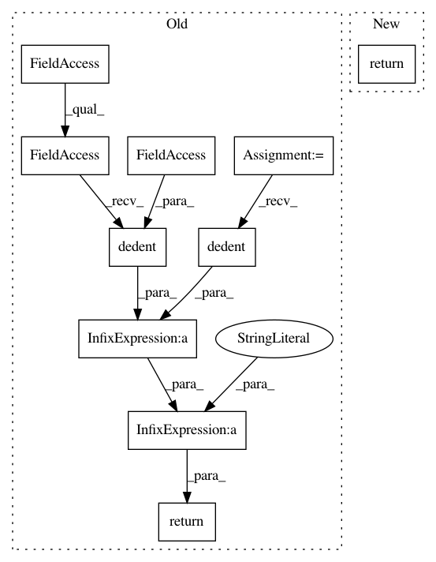

c8804a63fece7a67006a7420a5ada14869f4bcf4,tensorflow_datasets/scripts/documentation/dataset_markdown_builder.py,,display_description,#Any#,22
Before Change
def display_description(builder):
return textwrap.dedent(
f\
* **Description**:
) + tfds.core.utils.dedent(builder.info.description) + "\n"
def display_config_description(builder):
if builder.builder_config:
After Change
def display_description(builder):
return f\
* **Description**:
{tfds.core.utils.indent(builder.info.description, " ")}
def display_config_description(builder):
if builder.builder_config:
In pattern: SUPERPATTERN
Frequency: 3
Non-data size: 10
Instances
Project Name: tensorflow/datasets
Commit Name: c8804a63fece7a67006a7420a5ada14869f4bcf4
Time: 2020-07-21
Author: cs17btech11040@iith.ac.in
File Name: tensorflow_datasets/scripts/documentation/dataset_markdown_builder.py
Class Name:
Method Name: display_description
Project Name: tensorflow/datasets
Commit Name: c8804a63fece7a67006a7420a5ada14869f4bcf4
Time: 2020-07-21
Author: cs17btech11040@iith.ac.in
File Name: tensorflow_datasets/scripts/documentation/dataset_markdown_builder.py
Class Name:
Method Name: display_manual
Project Name: tensorflow/datasets
Commit Name: c8804a63fece7a67006a7420a5ada14869f4bcf4
Time: 2020-07-21
Author: cs17btech11040@iith.ac.in
File Name: tensorflow_datasets/scripts/documentation/dataset_markdown_builder.py
Class Name:
Method Name: display_citation